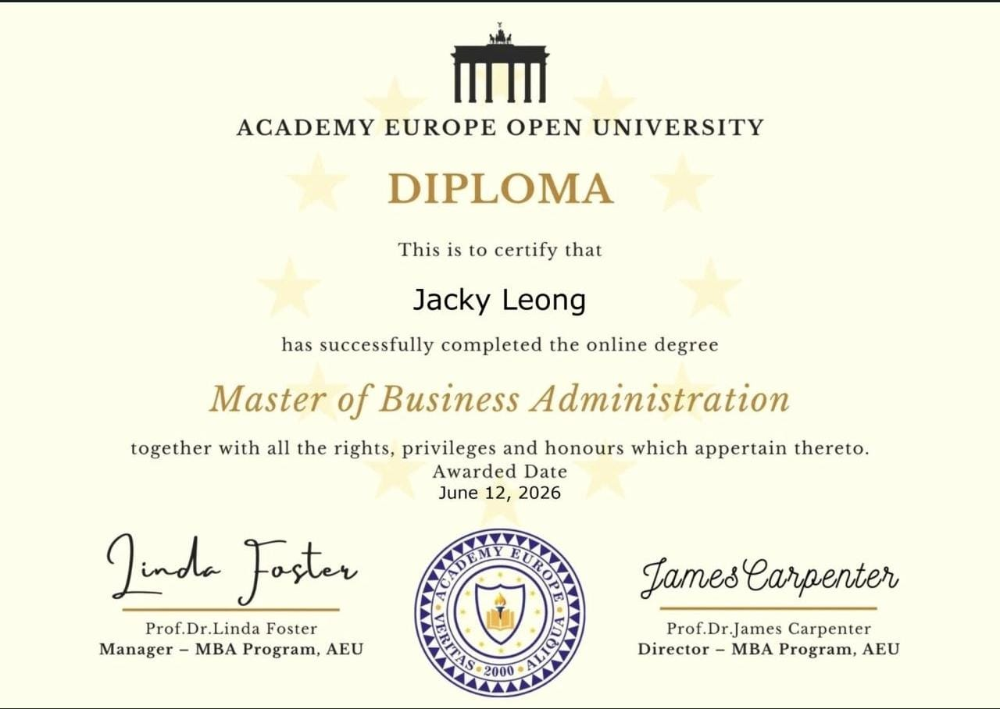
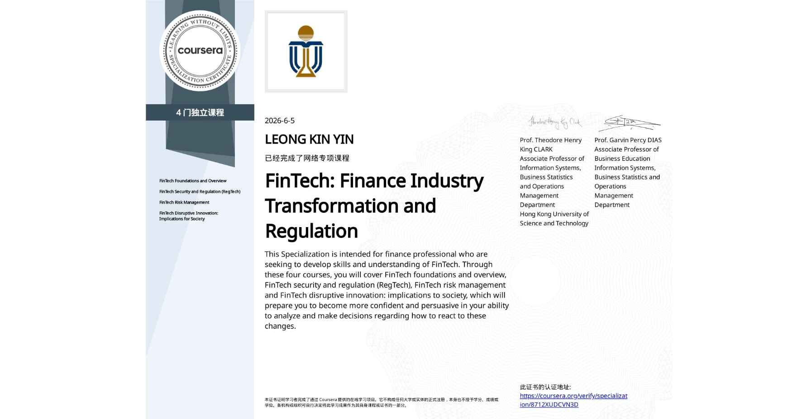
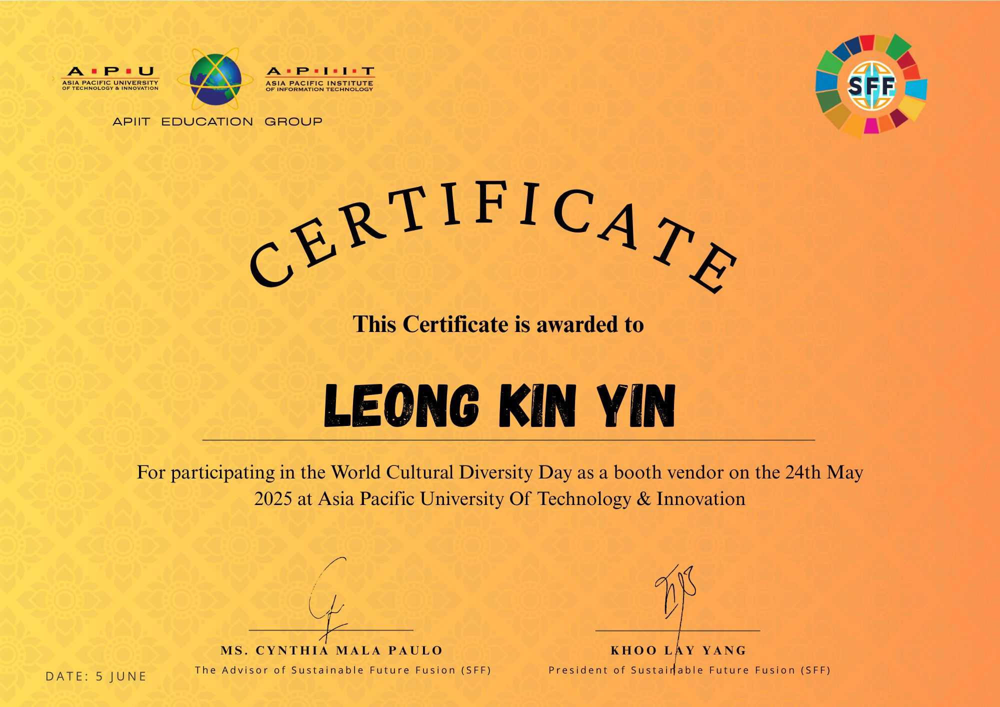
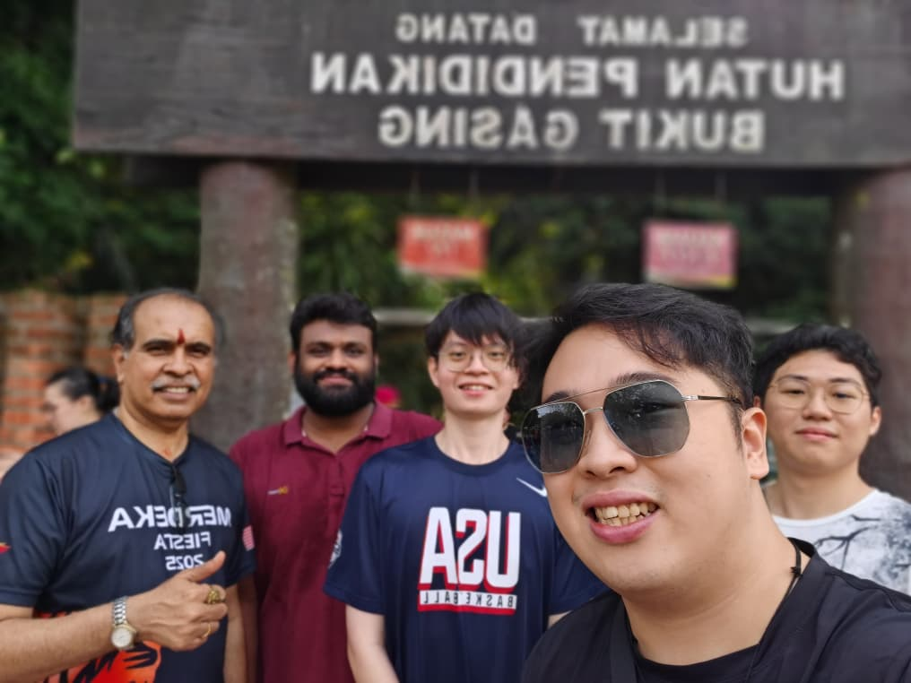
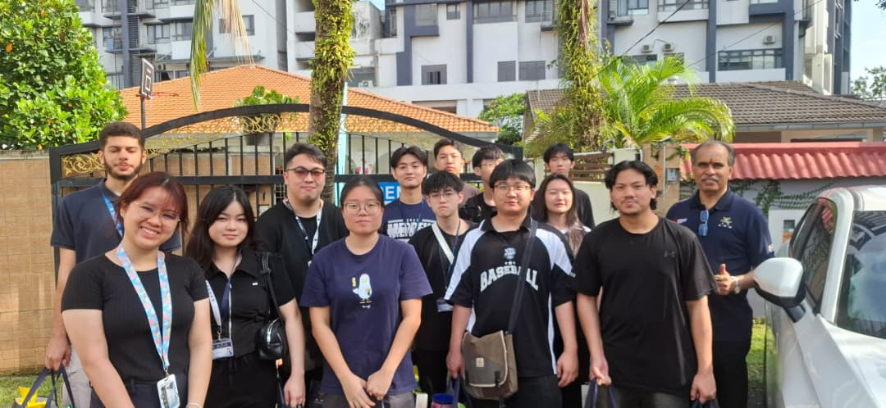
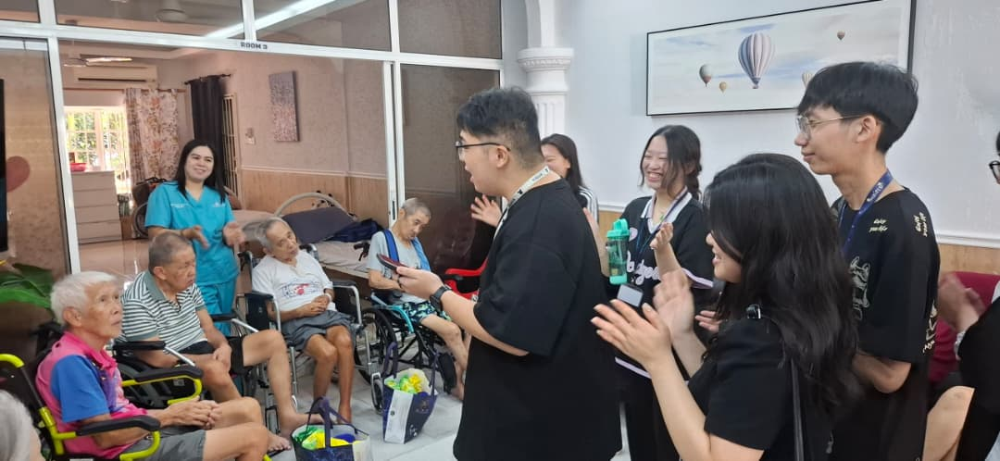
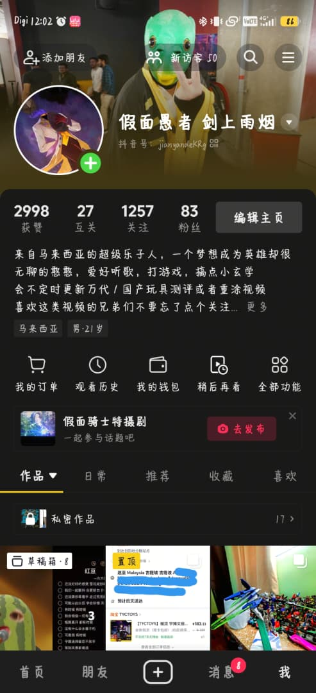
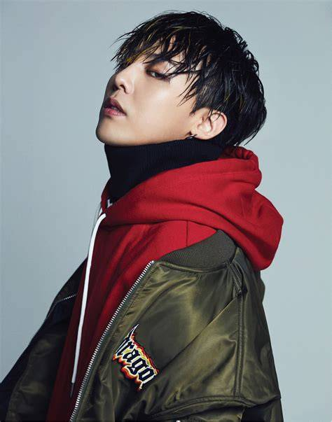

SEP 2026 — JAN 2027
AI Data Labelling Intern
Meraque Group
I build thoughtful digital experiences at the intersection of finance, technology, and people. Currently studying FinTech at Asia Pacific University in Kuala Lumpur.
A quick introduction to the person behind the projects.
I'm Leong Kin Yin, a FinTech student at Asia Pacific University with a software engineering background and a genuine interest in building useful things. I enjoy working across the stack—from shaping a friendly interface to thinking through the data and logic behind it.
Outside my studies, I enjoy anime, manga, and Japanese tokusatsu—especially Kamen Rider and Ultraman. I also enjoy getting involved in events and meeting new people.
Coursework, hackathons, and experiments. Select a card to see more details.
Experience gathered through study, collaboration, and hands-on work.
Built and maintained website features using HTML, CSS, and PHP. Contributed to interface design, backend logic, and a prototype mobile app using Thunkable and Joget.
Exploring how software, data, and financial services come together.
Built a foundation in programming, software design, databases, and team projects.
Course completions and campus contributions. Select a credential or certificate image to view it.



Events, new experiences, and the things that keep me curious.




A few moments from campus, volunteering, and creating content.
I enjoy music as a way to recharge and express myself. My favourite singers are KUN and G-Dragon from BIGBANG, and these are a few songs I feel describe me.

Spotify ↗I'm open to internship opportunities and conversations about technology, FinTech, and collaborative projects.